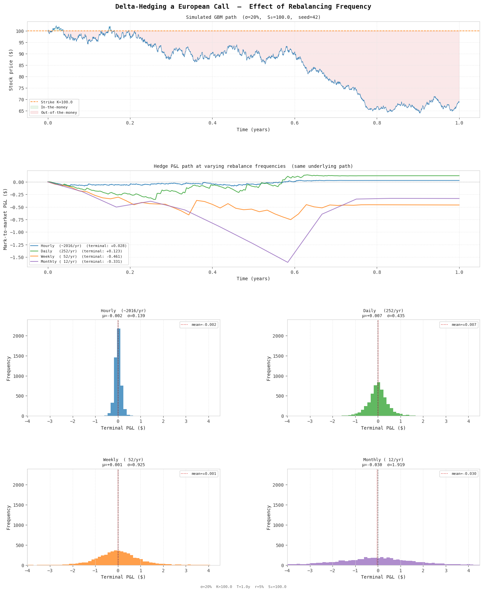

Simple delta hedging
Let $x$ be a stochastic process described by: $$\text{d}x = a(x,t) \text{d}t + b(x,t) \text{d}W$$ where $\text{d}W$ is a Brownian motion.
Let $G(x,t)$ be a smooth function of $x$ and $t$. That means that if we plot $G$ as a function of $x$ and $t$, the resulting surface is smooth. Note that this seems to contradict the fact that $x(t)$ is a stochastic process and therefore jagged. Indeed, if we plot $G$ strictly as a function of time (ie. $G(x(t), t)$) for a single realisation of $x(t)$ then $G(t)$ will be jagged too. But in $x,t$ space $G$ is smooth.
We might ask: after a short period of time, what is the change in $G$ for a specific realisation of $x(t)$? Ito's lemma tells us that: $$\text{d}G = \frac{\partial G}{\partial x} a(x,t) \text{d}t + \frac{\partial G}{\partial t} \text{d}t + \frac{1}{2} \frac{\partial^2 G}{\partial x^2} b^2(x,t) \text{d}t + \frac{\partial G}{\partial x} b(x,t) \text{d}W$$
Let us suppose that fluctuations in stock price $S$ follows a drift process: $$\frac{\text{d}S}{S} = \mu \text{d}t + \sigma \text{d}W$$ Let $f$ be the price of a derivative with $S$ as its underlying asset. Then by Ito's lemma:
$$\text{d}f = \frac{\partial f}{\partial S} \mu S \text{d}t + \frac{\partial f}{\partial t} \text{d}t + \frac{1}{2} \frac{\partial^2 f}{\partial S^2} \sigma^2 S^2 \text{d}t + \frac{\partial f}{\partial S}\sigma S \text{d}W$$ At this point, we know that $f$ is a smooth function of $S$ and $t$, although we do not know what this smooth function is.
Now, consider a long portfolio $\Pi$ (buy derivative, hedge with stock, exclude cash) containing a single unit of the derivative worth $f$, and $-\frac{\partial f}{\partial S}$ units of the underlying, worth $-\frac{\partial f}{\partial S} S$.
By Ito's lemma, the change in our underlying short position is: $$-\frac{\partial f}{\partial S} \mu S \text{d}t - \frac{\partial f}{\partial S} \sigma S \text{d}W$$ So the change in our portfolio (containing 1 unit of the derivative and $-\frac{\partial f}{\partial S}$ units of the underlying) is: $$\text{d}\Pi = \frac{\partial f}{\partial t} \text{d}t + \frac{1}{2} \frac{\partial^2 f}{\partial S^2} \sigma^2 S^2 \text{d}t$$ which is completely deterministic.
Since $\text{d}\Pi$ contains no $\text{d}W$ term, the portfolio is instantaneously risk-free - its value changes deterministically over any short interval. A risk-free portfolio must earn exactly the risk-free rate $r$. If it didn't, one could borrow at $r$, invest in the portfolio, and extract a guaranteed profit. Below we spell out both cases.
Case 1: Portfolio grows faster than $r$
Suppose $\frac{d\Pi}{dt} > r\Pi$. Then we long the portfolio:
- Start with $\$0$.
- Short $\frac{\partial f}{\partial S}$ units of the stock, receiving $\frac{\partial f}{\partial S}S$ in cash.
- Borrow an additional $\ f - \frac{\partial f}{\partial S}S$ at rate $r$.
- Use all cash to buy one unit of the derivative at cost $\ f$.
The portfolio is worth $\Pi = f - \frac{\partial f}{\partial S}S$, and the cash account is $-\Pi$. There are two cases to consider. If the initial value of the portfolio is positive, then we end up with a negative cash balance. The portfolio grows faster than the interest accumulates on the borrowed amount and we profit. If the initial value of the portfolio is negative, then we end up with a positive cash balance. The interest earned on this cash exceeds the change in our portfolio position, and we again profit.
Case 2: Portfolio grows slower than $r$
Suppose $\frac{d\Pi}{dt} < r\Pi$. Reverse the construction:
- Start with $\$0$.
- Short one unit of the derivative, receiving $\ f$ in cash.
- Buy $\frac{\partial f}{\partial S}$ units of the stock at cost $\frac{\partial f}{\partial S}S$.
Your portfolio is now $-\Pi = -f + \frac{\partial f}{\partial S}S$ (because $\Pi$ is the value of a long derivative portfolio), and your cash account is $\Pi$. Again, if the initial portfolio value was positive (so that the value the position from shorting the portfolio is negative), then the interest earned on the cash account exceeds the losses on the delta-hedged short position. And if the initial portfolio value was negative (so that the value of the position from shorting the portfolio is positive), then the interest paid on the borrowed cash is less than the gains on the delta-hedged short position. In either case, we profit.
Summary:
| $\frac{d\Pi}{dt} > r\Pi$ Buy derivative, short stock |
$\frac{d\Pi}{dt} < r\Pi$ Sell derivative, buy stock |
|
|---|---|---|
| $\Pi > 0$ | Portfolio returns beat borrowing costs. | Cash interest beats losses on short position. |
| $\Pi < 0$ | Cash interest beats losses on portfolio. | Gains on short position beat interest payments. |
In both cases the ability to scale the position makes the profit large. So the only price consistent with no arbitrage is: $$\frac{d\Pi}{dt} = r\Pi$$ Substituting the expression for $\text{d}\Pi$ gives the Black–Scholes PDE: $$\frac{\partial f}{\partial t} + \frac{1}{2}\sigma^2 S^2 \frac{\partial^2 f}{\partial S^2} = r\!\left(f - \frac{\partial f}{\partial S}S\right)$$
Let $f_t$ denote the Black-Scholes fair value of the option. Suppose the market quotes a price $f_m \neq f_t$. The key insight is that a continuously delta-hedged position has zero net P&L at expiry when the option is purchased at fair value. Any deviation from fair value translates directly into a riskless cash gain or loss at inception, which can then be invested at the risk-free rate.
Option is underpriced ($f_m < f_t$):
- Buy the option at $f_m$ and immediately set up the delta hedge.
- This is equivalent to buying at fair value $f_t$ and receiving a cash refund of $f_t - f_m > 0$.
- The delta-hedged portfolio has zero net P&L from this point. The refund is invested at the risk-free rate and kept.
- Risk-free profit: $f_t - f_m$, compounded to expiry.
Option is overpriced ($f_m > f_t$):
- Sell the option at $f_m$ and immediately set up the delta hedge (now long the underlying).
- This is equivalent to selling at fair value $f_t$ and receiving an immediate cash bonus of $f_m - f_t > 0$.
- The delta-hedged portfolio again has zero net P&L. The bonus is invested at the risk-free rate.
- Risk-free profit: $f_m - f_t$, compounded to expiry.
In both cases the delta hedge eliminates all exposure to the stock price path, leaving only the riskless gain from the initial mispricing.
Toy simulation
Here is a vibecoded toy simulation of the process. We assume a stock price $S_0 = 100$ at $t=0$, a strike price $K = 100$, $r=0.05$, true volatility (of the stock price) $\sigma = 0.2$, and that the implied volatility (which the market uses to price the derivative) is the same as the true volatility.
For a European call with terminal condition $$f(S,T)=\max(S-K,0)$$ the Black Scholes price is $$C(S,\tau,\sigma)=S\mathcal{N}(d_1)-Ke^{-r\tau}\mathcal{N}(d_2)$$ where $\tau=T-t$ and $$d_1=\frac{\ln(S/K)+(r+\frac{1}{2}\sigma^2)\tau}{\sigma\sqrt{\tau}} \qquad d_2=d_1-\sigma\sqrt{\tau}$$ For a put option, $$ P=Ke^{-r\tau}\mathcal{N}(-d_2)-S\mathcal{N}(-d_1) $$ Here is an implementation of the pricing function:
def bs_price(S, K, T, r, sigma, kind="call"):
if T <= 1e-10: # at expiry: return intrinsic value
return max(S - K, 0) if kind == "call" else max(K - S, 0)
d1 = (np.log(S / K) + (r + 0.5 * sigma**2) * T) / (sigma * np.sqrt(T))
d2 = d1 - sigma * np.sqrt(T)
if kind == "call":
return S * norm.cdf(d1) - K * np.exp(-r * T) * norm.cdf(d2)
return K * np.exp(-r * T) * norm.cdf(-d2) - S * norm.cdf(-d1)To find the hedge ratio we compute the derivative $\frac{\partial f}{\partial S}$, called the delta. Differentiating the Black-Scholes call price with respect to $S$ and using $$S\phi(d_1)=Ke^{-r\tau}\phi(d_2)$$ which follows from $$d_2=d_1-\sigma\sqrt{\tau}$$ shows that the $\phi$ terms cancel, leaving $$ \Delta=\mathcal{N}(d_1) $$
def bs_delta(S, K, T, r, sigma, kind="call"):
if T <= 1e-10:
return (1. if S > K else 0.) if kind == "call" \
else (-1. if S < K else 0.)
d1 = (np.log(S / K) + (r + 0.5 * sigma**2) * T) / (sigma * np.sqrt(T))
return norm.cdf(d1) if kind == "call" else norm.cdf(d1) - 1.
Book-keeping
Set up the trade
C0 = bs_price(S_path[0], K, T, r, sigma, kind)
delta0 = bs_delta(S_path[0], K, T, r, sigma, kind)
shares = -delta0 # we are short delta0 shares
cash = delta0 * S_path[0] - C0 # cash received minus premium paid
Rebalancing at $t_i$
Between $t_{i-1}$ and $t_i$, the cash grows at the risk-free rate:
$$
B_i \leftarrow B_{i-1} e^{r(t_i-t_{i-1})}.
$$
Next, rebalance to the new target delta, $\Delta_i$. We hold $-\Delta_{i-1}$ and need $-\Delta_i$, so we buy
$$
\delta_{\mathrm{trade}} = (-\Delta_i)-(-\Delta_{i-1})
= \Delta_{i-1}-\Delta_i
$$
shares, where a negative value means sell. The cash update for this step is
$$
B_i \leftarrow B_i - \delta_{\mathrm{trade}} \cdot S_i
= B_i + (\Delta_i-\Delta_{i-1})S_i.
$$
Here is the rebalancing loop:
for curr in hidx[1:]:
elapsed = (curr - prev) * dt_sim
# Step 1: Accrue risk-free interest on cash
cash *= np.exp(r * elapsed)
# Step 2: Rebalance to the new delta
T_rem = T - times[curr]
new_d = bs_delta(S_path[curr], K, T_rem, r, sigma_impl, kind)
trade = (-new_d) - shares # shares to BUY (negative => sell)
cash -= trade * S_path[curr] # spend / receive cash
shares = -new_d
cash_path.append(cash)
prev = curr
Close the trade at expiry
At expiry we calculate the final payoff by summing the cash, stock and option positions:
S_T = paths[:, -1] # stock price at option maturity
payoff = np.maximum(S_T - K, 0) if kind == "call" else np.maximum(K - S_T, 0)
return payoff + cash + shares * S_T
Here are the results of the simulation for different hedging frequencies. As we expect, the mean payoff for each frequency is $0$, because the initial amount that we paid for the call option, CO, was priced correctly using Black Scholes. If it had been mispriced we would have carried the mispricing to time $T$, and the distribution would have been centered about the mispricing.
